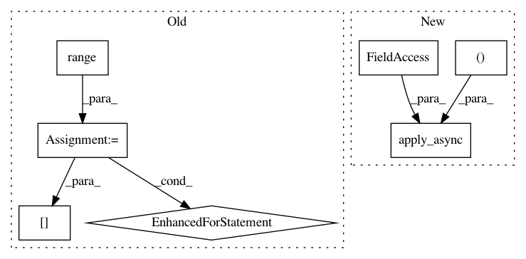

29ab5e1965503be3ffe87462e973edf1d457af6e,codes/scripts/extract_subimgs_single.py,,main,#,9
Before Change
sub_lists = chunkify(all_files, n_thread)
// call workers
for i in range(n_thread):
p.apply_async(worker, args=(sub_lists[i], save_GT_dir))
print("Waiting for all subprocesses done...")
p.close()
p.join()
end = time.time()
After Change
pool = Pool(n_thread)
for path in img_list:
pool.apply_async(worker,
args=(path, save_folder, crop_sz, step, thres_sz, compression_level),
callback=update)
pool.close()
pool.join()
print("All subprocesses done.")
In pattern: SUPERPATTERN
Frequency: 3
Non-data size: 7
Instances
Project Name: xinntao/BasicSR
Commit Name: 29ab5e1965503be3ffe87462e973edf1d457af6e
Time: 2018-09-06
Author: wxt1994@126.com
File Name: codes/scripts/extract_subimgs_single.py
Class Name:
Method Name: main
Project Name: geometalab/OSMDeepOD
Commit Name: 285dc85691241532cd976e04a089f409e44d7493
Time: 2016-08-12
Author: samuel.kurath@gmail.com
File Name: src/detection/tensor/detector.py
Class Name: Detector
Method Name: detect_multiple
Project Name: instacart/lore
Commit Name: f863a6804ba1f46c3f216c6ba75b642b9b61ad17
Time: 2018-02-01
Author: montanalow@users.noreply.github.com
File Name: lore/pipelines/holdout.py
Class Name: Base
Method Name: encode_x